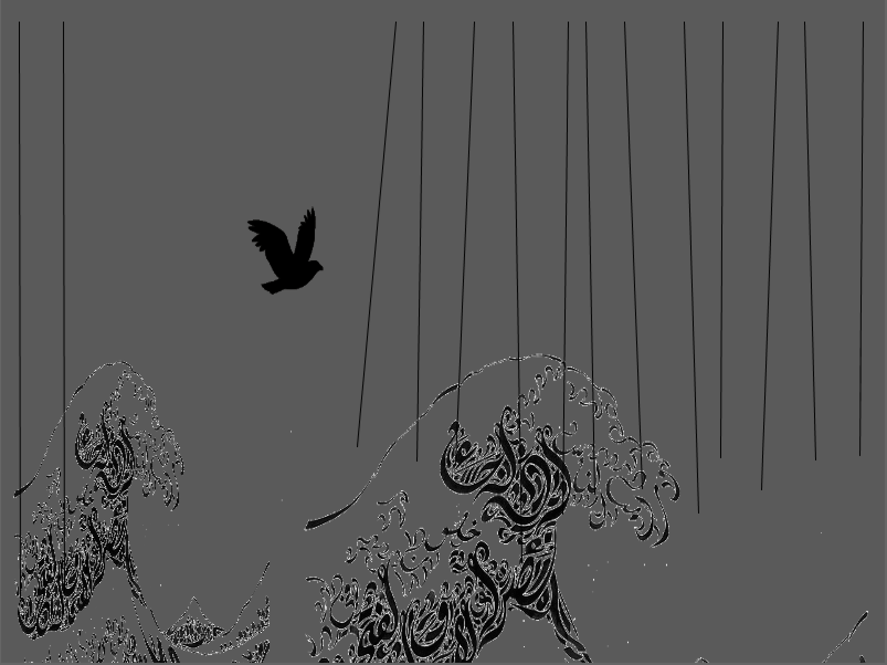

Art

Fireflies
Fireflies is an artwork combining animation, interactive digital devices and art installation. It aims at restoring the fleeting beauty of fireflies. The fireflies are "stored" in a glass jar as LED lights and will fly away until disappear when someone opens the jar.- Processing, Arduino, Circuit Design, Interactive Design

Bird
Bird is an interactive animation incorporating art and philosophy concpets from western and eastern. The overall idea is that time does not retrieve.- Processing